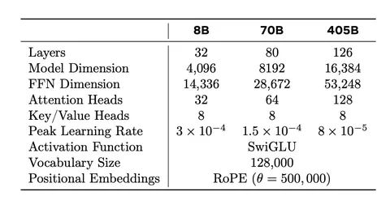

Продолжаем разбирать LLaMA 3.1. В прошлый раз речь шла о претрейн-датасете, а в этот раз — об архитектуре модели.
Llama 3 использует стандартную архитектуру трансформера, которая не сильно отличается от того, что было в LLaMA и LLaMA 2. Однако отличия есть. Скажем, если в LLaMA 2 Grouped Query Attention (GQA) с восемью ключевыми головами внимания использовались только в моделях на 34B+, то здесь GQA применяется для всех моделей LLaMA 3.1. Это позволило повысить скорость вывода и уменьшить объём данных, необходимых для кеширования во время декодирования.
Ещё одно важное изменение — увеличение контекстного окна до 128 тысяч токенов. Это стало возможным благодаря увеличению гиперпараметра базовой частоты RoPE до 500 тысяч. Такой подход позволяет модели эффективно решать задачи, связанные с большими объёмами текстов. Модель также использует словарь на 128 тысяч токенов.
Разработчики внедрили четырёхмерный параллелизм (4D Parallelism), который включает тензорный, пайплайновый, контекстный и параллелизм данных. Этот подход позволяет значительно улучшить утилизацию ресурсов при обучении на тысячах GPU. Например, для обучения модели с 405 миллиардами параметров использовалось до 16 тысяч GPU, а средняя утилизация вычислительных ресурсов составила около 41%.
Контекстный параллелизм позволяет разбивать длинные строки на части. В отличие от классических методов, такой параллелизм синхронизирует только ключи и значения в attention-слое, что минимизирует задержки при обработке длинных последовательностей.
Помимо этого, в архитектуре LLaMA 3.1 активно используется FP8-квантизация, которая значительно ускоряет вычисления без значительных потерь в точности. Это позволяет экономить до 50% времени на вычисления по сравнению с традиционными методами, что критично для моделей с миллиардами параметров. FP8-квантизация используется не для всех слоев, потому что она может вызвать ошибки при вычислении в attention-слоях. Подход доказал свою эффективность при решении большинства задач.
Разбор подготовил
Душный NLP
